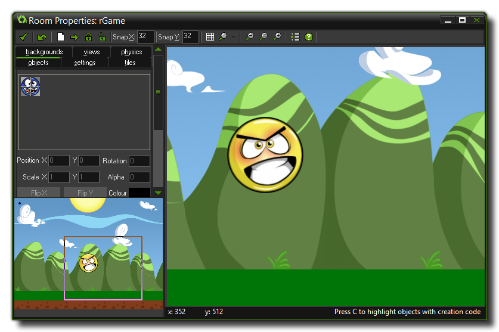

在尽可能深入 GameMaker: Studio 之前最好找到一种感觉。GameMaker: Studio 创建的游戏发生在一个或多个 房间 里。现在，这些 Rooms 是二维空间，但是也可以包含三维图形，取决于您如何使用它。在这些房间里您放置可以用程序定义的 物体。典型的物体是墙、移动的小球，玩家控制的角色、敌人和其他任何您可以从玩过的游戏中想到的元素！一些物体例如墙只是在那儿不动，而其他物体例如主角可以在按下鼠标键盘或操纵杆时移动。例如，当主角遇到敌人，他可能会死，或者他打死敌人获得分数。正如你看到的，物体是 GameMaker: Studio 中最重要的组成部分，所以让我们来看看更多的细节。
首先大多数物体作为实例放置在房间里，需要一些图片使得它们在屏幕上可见。这样的图像被称为 精灵。一个精灵往往不是一个单一的形象，而是一整套一个接一个显示的动画，这样它们看起来就像行走的角色、旋转的球或敌人爆炸等。在游戏期间，对任何物体的特定实例的精灵都是可以改变的，所以可以看到角色在不同的时候往左或者往右走。你可以在 GameMaker: Studio 里创建自己的精灵或从文件加载或者自己用强大的 GameMaker: Studio 精灵编辑器制作。下面是一个典型的物体的样子:
当我们需要一个物体做 什么的时候，我们需要给它动作，而且还需要告诉它什么时候完成这些动作。我们使用 EVENTS (事件).完成这项工作。事件 是一个特殊的时刻，可以确保 动作 只在这些 事件 触发。有大量不同的事件和动作。比如，Create Event (创建事件) 只会在物体被创建时发生。事实上，那并不准确！物体 永远不会 被创建，只是创建了它们的 实例... 实例是物体用于你的游戏中拥有完全相同的事件和动作的副本。物体作为蓝本，则实例是蓝图。例如，在房间中创建一个运动的球实例需要在球物体的创建事件中添加动作。
另一个例子是 Collision Event (碰撞事件)。这会发生在房间中任意两个实例发生碰撞的时候。在这种情况下你可以使实例停止、逆转方向或其他任何行动，例如播放音效或者加分。进一步地，可以包含 Keyboard Event (键盘事件) (比如玩家按下一个键)、Mouse Event (鼠标事件) (检测鼠标按钮)以及 Draw Event (绘制事件)。还有更多的事件会在后面讲到。.
一旦你定义了你的物体，你应该定义他们在房间 的位置。房间可以用于显示游戏等级、信息甚至开始菜单。有从一个房间移动到另一个房间的动作，所以你可以创建一个按钮物体做到这件事。需要注意的是，如果没有任何房间，GameMaker: Studio 不会运行游戏。但是如何创建房间？GameMaker: Studio 有一个完善的编辑器创建这些区域，在编辑器里你可以添加或更改许多视觉或游戏性方面的东西。例如，你可以添加 backgrounds (背景) ，可以是单色或者一些图像。这样的背景图像可以在 GameMaker: Studio 里自己编辑，或者从其他文件里加载资源。背景事实上可以做很多事，但是事实上还是作为让房间更好看的东西比较稳妥。接下来，你可以放一个 (或多个!) 实例到房间里。例如，你想有一大块墙，需要定义墙物体并且放置多个它的实例，同样可以制作敌军物体！只需制作一个敌军物体，然后放置多个实例在你的房间里。利用这些你就可以很方便地只用几个物体就做好整个游戏。接下来看一个房间编辑器的例子: 
一旦完成了你的房间设计，你就可以运行游戏了。第一个显示的房间是主列表里的第一个房间，它将在启动时显示。现在你放置的实例拥有生命力了，因为你为它们的物体定义了创建事件所以它们开始彼此发生 碰撞事件等。它们也会触发键盘事件或鼠标事件。
这是GameMaker: Studio 里最重要的两个东西，但是还有一些其他的！它们被称作 resources (资源) 和 assets (资产)，并且在 GameMaker: Studio 的主屏幕你可以在左手边称为 resource tree (资源树) 的地方找到它们。下面是它们的列表，你应该了解它们，因为它们将在你的游戏中发挥重要的作用:
- 精灵: 图像 (通常是动画)，用于代表物体
- 声音: 可以用于游戏的背景音乐或音效
- 背景: 作为房间的背景
- 路径: 可以使实例沿预定路径移动
- 脚本: 脚本是一个代码块，你需要给它命名，然后像使用GML函数一样使用它们
- 着色器: 着色器组合两个程序写在一个 着色器语言 来创建图形效果
- 字体: 绘制很多不同风格的字体
- 时间轴: 精确控制时间
- 物体: 这是你的游戏的基础结构
- 房间: 放置物体的空间 (关卡)
- 包含文件: 生成目标游戏时需要包含的文件
- 扩展: 游戏功能的扩展包
- 常量: 你的游戏中自定义的常量列表
注意: 了熟悉 GameMaker: Studio，我们强烈建议您学习捆绑的初学者教程。这些可以在启动屏幕的 Tutorials (教程) 选项卡中找到它们，它们涵盖了所有的基本功能。
| Converted from CHM to HTML with chm2web Pro 2.85 (unicode) |